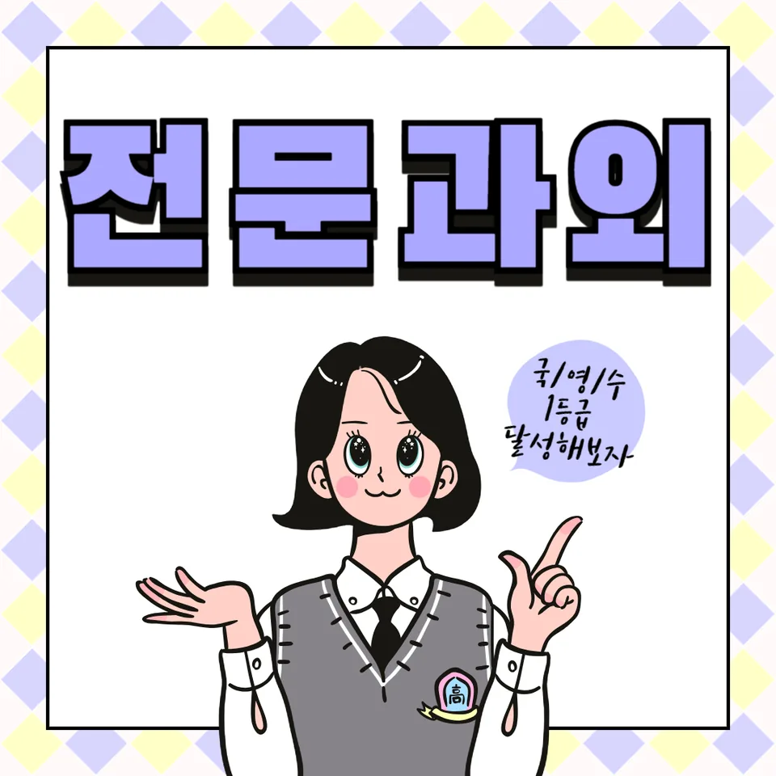

PageType : CITY
URL : /경기도과외/양주시과외/
지역 학습환경과 학생들의 변화
양주시과외를 알아보는 학생들은 대체로 “학원은 다니는데 왜 성적이 멈춘 느낌일까요?”라는 질문으로 시작합니다. 양주 지역은 등하교 동선과 학원 밀집도가 비교적 분산되어 있어서, 같은 학습 시간을 써도 학생마다 집중 구간이 달라지곤 합니다. 수업 전에는 책상 앞에 오래 앉아 있어도 실제로는 이해가 아닌 훑기만 끝내는 경우가 많았지만, 양주시과외에서는 공부 습관을 먼저 점검하면서 달라지는 모습이 자주 보입니다.
처음에는 문제집을 풀기보다 예습을 건너뛰고, 수업 후 복습도 “해야 한다”는 생각만 남기는 학생이 많습니다. 하지만 개인별로 오답 유형과 이해가 끊기는 지점을 함께 찾다 보면, 공부 시간이 짧아져도 성취도가 올라가는 변화가 나타납니다. 특히 내신 대비 시기에는 시험 범위가 촘촘해지면서, 양주시과외를 통해 학습 태도와 체크 방식이 정리된 학생들이 흔들리지 않습니다.
학부모가 많이 고민하는 부분
학부모들은 대체로 두 가지를 가장 크게 걱정합니다. 하나는 “우리 아이가 정말 공부하는 중인지”이고, 다른 하나는 “불안할 때 무엇부터 잡아야 하는지”입니다. 양주시과외 상담에서도 자주 나오는 말이 “숙제가 끝났다고 하는데 어디가 약점인지 모르겠어요”입니다. 이 고민은 학생이 스스로 점검하는 루틴이 없을 때 더 커집니다.
그래서 수업에서는 기록을 남기는 방식이 중요해집니다. 예를 들어 시간관리 체크를 할 때 단순히 ‘몇 분’만 보는 것이 아니라, 무엇을 어떤 방식으로 풀었는지까지 함께 정리합니다. 결과적으로 학부모는 단편적인 보고가 아니라 학습 흐름을 이해하게 되고, 내신 준비가 시작된 뒤에도 가정에서의 압박이 줄어듭니다. 양주시과외가 장기적으로 선택되는 이유도 여기에 있습니다.
학년이 올라갈수록 달라지는 공부
중등 초반의 공부는 문제 풀이량이 늘면 성적이 오르는 구간이 있습니다. 그런데 학년이 올라가면, 같은 풀이를 해도 사고 과정이 정확해야 점수가 움직입니다. 양주시과외에서는 이 전환 시점을 놓치지 않도록 학습 태도를 점검합니다. 1학기에는 “풀어보기”가 중심이었다면, 2학기부터는 “왜 틀렸는지”와 “다음에 어떻게 바꿀지”가 핵심이 됩니다.
학생들의 학습 분위기도 시기마다 달라집니다. 시험기간이 가까워질수록 집중이 올라가는 학생이 있는 반면, 오히려 불안으로 인해 계획을 잃는 학생도 있습니다. 양주시과외는 과목별로 우선순위를 달리 잡아주고, 학년별 변화에 맞춰 공부 계획을 재구성하도록 돕습니다. 그 과정에서 자기주도학습이 ‘혼자 하라는 말’이 아니라 ‘혼자도 굴러가는 방식’으로 자리 잡습니다.
학교생활과 내신 준비
양주 지역 학교생활에서는 수업 진도와 수행평가가 맞물릴 때가 많아, 시험이 오기 전부터 준비 강도가 달라집니다. 내신 준비는 단순 암기가 아니라 수업에서 나온 문장, 도표 해석, 개념 적용을 얼마나 자연스럽게 써내는지로 갈립니다. 양주시과외에서는 학교 수업과 연결되는 방식으로 학습을 설계해, 시험 직전의 벼락 집중이 아니라 꾸준한 학습습관을 만들도록 합니다.
특히 학생들이 흔히 놓치는 건 ‘공부한 것처럼 보이는 상태’입니다. 예를 들어 문제를 많이 풀었는데 채점 기준을 이해하지 못하면 내신에서 점수가 흔들립니다. 그래서 수업에서는 학교 시험 스타일을 따라가며, 과목 선택과 학습 전략을 정교하게 조정합니다. 결과적으로 내신 점수는 공부량보다 준비의 질에서 차이가 납니다.
자기주도학습이 중요한 이유
자기주도학습은 의지가 강한 학생만의 영역이 아닙니다. 계획을 세우는 능력, 복습을 연결하는 힘, 그리고 스스로 막히는 순간을 파악하는 태도가 함께 필요합니다. 양주시과외에서는 학생이 스스로 움직일 수 있게 만드는 체크 구조를 제공합니다. “오늘 할 일”이 끝나면 무엇을 확인해야 하는지, 틀린 문제를 어떤 순서로 다시 볼지까지 정해집니다.
이때 자기주도학습의 핵심은 동기부여 문장이 아니라 반복 가능한 절차입니다. 예컨대 공부습관을 점검할 때는 시작 시간보다 종료 후 회고를 더 중요하게 둡니다. 학생이 스스로 ‘오늘의 성과가 뭐였는지’를 말할 수 있게 되면, 다음 시험에서 학습 계획이 더 현실적으로 바뀝니다. 양주시과외는 이런 루틴을 통해 시험 대비에서도 흔들림을 줄여 줍니다.
공부 습관이 성적에 미치는 영향
성적이 오르거나 멈추는 시점에는 대개 공부 습관의 차이가 있습니다. 어떤 학생은 수업 후 30분만 제대로 복습해도 개념이 고정되지만, 다른 학생은 시간을 늘려도 정리 방식이 달라 이해가 쌓이지 않습니다. 양주시과외에서 관찰되는 변화는 ‘시간 증가’보다 ‘학습 태도 변화’가 먼저라는 점입니다.
시간관리 또한 단순히 스케줄표로 끝나지 않습니다. 실제로 학생들은 같은 2시간이라도 집중 구간, 오답 처리 방식, 개념 확인 여부가 다를 때 결과가 달라집니다. 따라서 수업에서는 실제 시험과 닮은 방식으로 반복 연습을 설계하고, 오답이 쌓이지 않도록 관리합니다. 결국 내신과 시험 성적은 공부량의 총합이 아니라, 공부습관이 만들어내는 누적 효과에서 결정됩니다.
체크해야 할 학습 포인트
양주시과외를 통해 학습 점검을 진행할 때는 아래 항목이 특히 중요합니다. 학생이 “공부하고 있다”고 느끼는 순간에도 실제로는 빠져 있는 경우가 많습니다.
- 수업 후 복습이 ‘읽기’로 끝나는지, 개념-문항 연결이 되는지
- 오답 정리가 시험 서술 기준과 맞춰 작성되는지
- 시험기간에 과목별 우선순위가 계획대로 유지되는지
- 공부 계획이 바뀔 때 이유가 기록되어 다음 주 학습으로 이어지는지
양주시과외 선택 기준
양주시과외를 고를 때는 “어떤 과목을 가르치는지”만 보지 말고, 학생의 상태를 어떻게 진단하는지 확인하는 것이 좋습니다. 내신 준비는 학년별로 요구되는 서술 방식과 자료 해석이 달라서, 같은 방식이 오래 통하지 않을 수 있습니다. 그래서 첫 상담에서 현재 학습 태도, 시험 패턴, 공부습관을 함께 파악하고 맞춤 학습 계획을 제시하는지 중요합니다.
또한 실제 사례를 통해 수업의 방향이 설명되는지도 보셔야 합니다. 단순 성적 목표만 말하는 곳보다, 어떤 습관을 바꾸면 시험 점수가 움직이는지 구체적으로 연결해 주는 수업이 오래 갑니다. 양주시과외는 학생과 학부모가 같은 관점을 갖도록 돕는 과정에서 신뢰가 쌓입니다.
자주 묻는 질문
Q1. 양주시과외는 어느 시기에 시작하는 게 가장 유리할까요?
A1. 시험이 가까울 때보다, 학습습관이 굳어지기 전 구간에 시작할수록 효과가 안정적입니다. 특히 중등 초반에는 자기주도학습 루틴을 먼저 잡는 편이 좋습니다.
Q2. 공부 시간이 적은 학생도 성적이 오를 수 있나요?
A2. 가능합니다. 양주시과외에서는 시간의 총량보다 복습 방식, 오답 처리, 시간관리의 질을 우선으로 조정합니다.
Q3. 내신 준비에서 가장 먼저 잡아야 할 과목은 어떻게 정하나요?
A3. 학생의 현재 점수 편차와 시험 범위 비중을 함께 보고 우선순위를 정합니다. 학교생활에서 수행평가가 영향을 주는 과목도 고려합니다.
Q4. 시험기간에는 계획이 자주 무너져요. 어떻게 해야 하나요?
A4. 양주시과외에서는 계획을 ‘고정’이 아니라 ‘점검 후 수정’으로 운영합니다. 실패한 이유를 기록해 다음 시험에서 회복 속도를 높입니다.
Q5. 자기주도학습을 처음 시작하는 학생이면 어떤 지원이 필요할까요?
A5. 시작 단계에서는 체크해야 할 학습 포인트를 간단한 절차로 쪼개 줍니다. 그러면 학생이 스스로 움직이기 시작하고, 내신과 시험 대비도 더 현실적으로 변합니다.
